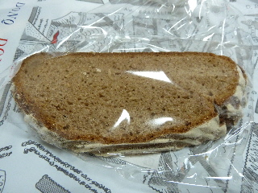
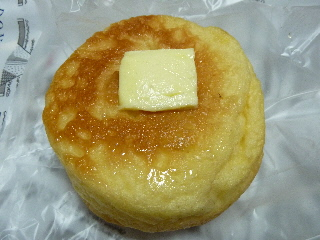
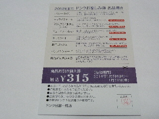
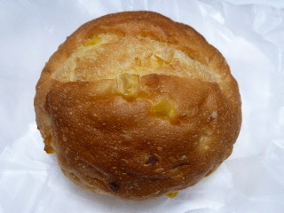
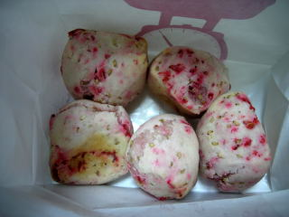
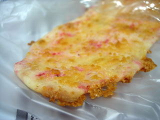
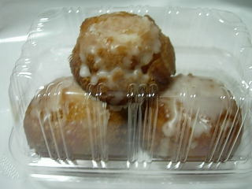
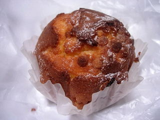
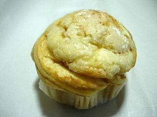

ドンクのロッゲンシュロートブロート
2014/10/23
味わい深いパンです。

ちびちびと食べました。
おつまみに丁度いいですね。
島根県出雲市駅北町4-1
閉店しました。
2014/10/23
味わい深いパンです。

ちびちびと食べました。
おつまみに丁度いいですね。
2014/10/11
パンとバダーは美味しいな。

普通に美味しい。
地味だけど確実に美味しい。
迷ったらコレだな！って思いました。
2014/01/01
ドンクで福袋を買いました。

内容は
パネトーネ（小）
キャラメルケーキ
イタリアンドルチェ（2個入）
ニューイヤーブレッド
セサミクッキー
紅白ロッシェ
パンプキンスープ
商品引換券（315円分）です。
お得な内容でした。
来年もあったら買おうかな。
一畑出雲店では他にも色々福袋を販売してて、見てて面白かったです。
2011/10/28
ちょっと地味なパンです。

パンの中にコーンが入っているだけす。
シンプルです。
パンの味とコーンの甘さを味わいながらムシャムシャと美味しくいただきました。
ちょっと小腹がすいた時に丁度いいので、好きなパンです。
2010/3/28
春らしい商品が販売してました。季節ものっていいですね。
桜海老もっちと桜海老パリパリです。


両方とも海老のいい香りがしました。
海老味は好きなのでちょっとうれしい商品でした。
パリパリはもっと乾燥して、煎餅みたいだったら良かったなと思いました。
2009/7/4
ちょっと小さな丸いドーナッツです。

サータアンダギー風ではなく、昔ながらのシンプルなドーナッツにちょっとレモン味が加わった味でした。
レモン味のドーナッツって変じゃない？なんて思ったんですが、レモンケーキ風って思ったら普通な商品だなって思いました。
2008/7/20
ふんわりとしていて、ケーキのような蒸しパンのようなホットケーキの様なマフィンでした。

キャラメル味のチップが中に入っていて、それに当たるとキャラメル味でした。
マフィン自体がしっかり甘いので、パウンドケーキみたいだなーって思いました。
パン屋さんのマカロンってことで大きさがかなり大きいです。

砂糖プラスクリームなので、甘いです。
クリーム入りのパンって甘いの期待して買うんですけど、意外とパンがシンプルな味で物足りないって事がよくあったりすます。でもこれはバッチリ甘いので期待通りで納得納得な商品でした。